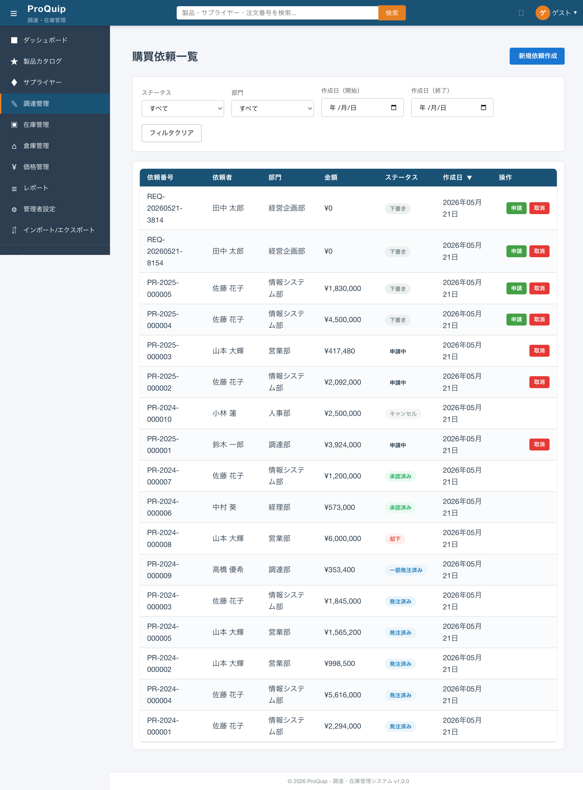

中分類: F-05-01（調達管理 > 購買依頼一覧画面）
URL: /procurement/requisitions
対象ロール: 全認証ユーザー（@RolesAllowed未設定）
作成日: 2026-06-03
screenshots/F-05/F-05-01-001_requisition-list_initial.png

ページヘッダ右上に配置された「新規依頼作成」ボタン。クリックすると購買依頼の新規作成画面（/procurement/requisitions/new）へ遷移する。
新しい購買依頼を作成するためのエントリーポイント。一覧画面から直接新規作成フローを開始できるようにする。
| 項目名 | 表示条件 | 値の取得元 | 備考 |
|---|---|---|---|
| 新規依頼作成ボタン | 常時表示 | 固定テキスト | btn btn-primary、icon-plusアイコン付き |
| 操作名 | トリガー | 実行内容 | 正常時の結果 | 異常時の結果 | 状態変化 |
|---|---|---|---|---|---|
| 新規依頼作成 | ボタンクリック | Router.navigate(['/procurement/requisitions/new']) | /procurement/requisitions/new へ遷移 | - | ページ遷移 |
権限制御なし。全認証ユーザーに表示される。
| ファイルパス | 関数/クラス/メソッド名 | 確認内容 |
|---|---|---|
| proquip-frontend/.../requisition-list.component.html | 行5-8 | ボタン配置・テキスト |
| proquip-frontend/.../requisition-list.component.ts | navigateToCreate():186 | 遷移先パス |
High
購買依頼をステータスで絞り込むドロップダウンセレクト。選択変更時にAPIを再呼出しし、サーバーサイドでフィルタリングする。
特定のステータスの購買依頼のみを表示し、承認待ちや下書き状態の依頼を効率的に管理するため。
| 項目名 | 型 | 必須/任意 | 入力制約 | 初期値 | バリデーション | 備考 |
|---|---|---|---|---|---|---|
| ステータスフィルタ | select | 任意 | 選択肢: すべて(空文字), 下書き(DRAFT), 申請中(SUBMITTED), 承認済み(APPROVED), 却下(REJECTED), キャンセル(CANCELLED) | すべて | - | サーバーサイドフィルタ（APIクエリパラメータ status） |
| 操作名 | トリガー | 実行内容 | 正常時の結果 | 異常時の結果 | 状態変化 |
|---|---|---|---|---|---|
| ステータスフィルタ変更 | select変更（ngModelChange） | currentPage=1にリセット → GET /api/requisitions?page=0&size=20&status={値} を呼出 | テーブルが選択ステータスの依頼のみに絞り込まれる | コンソールエラー出力、テーブル更新なし | currentPage=1、テーブルデータ更新 |
フィルタ選択変更 → ページ番号リセット（1ページ目）→ API再呼出 → テーブルデータ更新。「すべて」選択時はstatusパラメータなしでAPIを呼出。
| API ID | method | path | request | response | error response | 根拠 |
|---|---|---|---|---|---|---|
| - | GET | /api/requisitions | page=0, size=20, status=SUBMITTED（例） | PageResult<Requisition> | 500 Internal Server Error | Network通信観測 |
| ファイルパス | 関数/クラス/メソッド名 | 確認内容 |
|---|---|---|
| proquip-frontend/.../requisition-list.component.ts | statusOptions:57-61 | 選択肢定義（5ステータス） |
| proquip-frontend/.../requisition-list.component.ts | onFilterChange():170 | フィルタ変更時の処理 |
| proquip-frontend/.../requisition-list.component.ts | loadRequisitions():103 | API呼出（filterStatus送信） |
| proquip-frontend/.../requisition.service.ts | getRequisitions() | APIリクエスト構築 |
| proquip-web/.../RequisitionResource.java | GET /requisitions:84 | statusパラメータのJPQLフィルタ |
High
購買依頼を部門で絞り込むドロップダウンセレクト。クライアントサイドでフィルタリングする。
特定部門の購買依頼のみを表示し、部門別の管理を容易にするため。
| 項目名 | 型 | 必須/任意 | 入力制約 | 初期値 | バリデーション | 備考 |
|---|---|---|---|---|---|---|
| 部門フィルタ | select | 任意 | 選択肢: すべて(空文字), 総務部, 営業部, 技術部, 製造部, 品質管理部, 物流部, 経理部 | すべて | - | クライアントサイドフィルタ（ハードコード7部門） |
| 操作名 | トリガー | 実行内容 | 正常時の結果 | 異常時の結果 | 状態変化 |
|---|---|---|---|---|---|
| 部門フィルタ変更 | select変更（ngModelChange） | currentPage=1にリセット → API再呼出 → クライアントサイドでdepartmentフィールドの完全一致フィルタ | テーブルが選択部門の依頼のみに絞り込まれる | - | currentPage=1、テーブルデータ更新 |
| ファイルパス | 関数/クラス/メソッド名 | 確認内容 |
|---|---|---|
| proquip-frontend/.../requisition-list.component.ts | departmentOptions:64-73 | ハードコードされた7部門 |
| proquip-frontend/.../requisition-list.component.ts | applyLocalFilters():129-148 | クライアントサイドフィルタ実装 |
High
購買依頼の作成日を期間指定で絞り込むための開始日入力。HTML5 date inputを使用。
特定期間に作成された購買依頼を検索するため。終了日フィルタ（F-05-01-005）と組み合わせて期間を指定する。
| 項目名 | 型 | 必須/任意 | 入力制約 | 初期値 | バリデーション | 備考 |
|---|---|---|---|---|---|---|
| 作成日（開始） | date | 任意 | YYYY-MM-DD形式 | 空（未指定） | - | クライアントサイドフィルタ。createdAtフィールドと比較（>=） |
| 操作名 | トリガー | 実行内容 | 正常時の結果 | 異常時の結果 | 状態変化 |
|---|---|---|---|---|---|
| 開始日フィルタ変更 | 日付入力変更（ngModelChange） | currentPage=1にリセット → API再呼出 → クライアントサイドでcreatedAt >= filterDateFromフィルタ | テーブルが指定日以降の依頼のみに絞り込まれる | - | currentPage=1、テーブルデータ更新 |
| ファイルパス | 関数/クラス/メソッド名 | 確認内容 |
|---|---|---|
| proquip-frontend/.../requisition-list.component.html | 行40-48 | date input要素 |
| proquip-frontend/.../requisition-list.component.ts | applyLocalFilters():136-139 | Date比較ロジック（>=） |
High
購買依頼の作成日を期間指定で絞り込むための終了日入力。HTML5 date inputを使用。
特定期間に作成された購買依頼を検索するため。開始日フィルタ（F-05-01-004）と組み合わせて期間を指定する。
| 項目名 | 型 | 必須/任意 | 入力制約 | 初期値 | バリデーション | 備考 |
|---|---|---|---|---|---|---|
| 作成日（終了） | date | 任意 | YYYY-MM-DD形式 | 空（未指定） | - | クライアントサイドフィルタ。createdAtフィールドと比較（<=、当日の23:59:59.999まで含む） |
| 操作名 | トリガー | 実行内容 | 正常時の結果 | 異常時の結果 | 状態変化 |
|---|---|---|---|---|---|
| 終了日フィルタ変更 | 日付入力変更（ngModelChange） | currentPage=1にリセット → API再呼出 → クライアントサイドでcreatedAt <= filterDateTo(23:59:59.999)フィルタ | テーブルが指定日以前の依頼のみに絞り込まれる | - | currentPage=1、テーブルデータ更新 |
| ファイルパス | 関数/クラス/メソッド名 | 確認内容 |
|---|---|---|
| proquip-frontend/.../requisition-list.component.html | 行49-58 | date input要素 |
| proquip-frontend/.../requisition-list.component.ts | applyLocalFilters():141-145 | Date比較ロジック（<=, setHours(23,59,59,999)） |
High
全てのフィルタ条件を初期状態にリセットするボタン。
フィルタを一括解除して全件表示に戻すための操作。個々のフィルタを個別にリセットする手間を省く。
| 操作名 | トリガー | 実行内容 | 正常時の結果 | 異常時の結果 | 状態変化 |
|---|---|---|---|---|---|
| フィルタクリア | ボタンクリック | filterStatus='', filterDepartment='', filterDateFrom='', filterDateTo='', currentPage=1 → API再呼出（パラメータなし） | 全フィルタが「すべて」/空に戻り、テーブルが全件表示になる | - | 全フィルタ値リセット、currentPage=1 |
| ファイルパス | 関数/クラス/メソッド名 | 確認内容 |
|---|---|---|
| proquip-frontend/.../requisition-list.component.html | 行61-63 | ボタン配置（btn btn-outline） |
| proquip-frontend/.../requisition-list.component.ts | clearFilters():176-183 | 4フィルタ値クリア + ページリセット + リロード |
High
購買依頼を一覧表示するデータテーブル。7列（依頼番号・依頼者・部門・金額・ステータス・作成日・操作）で構成。共通コンポーネント app-data-table を使用。
全ての購買依頼の概要を一覧形式で確認し、必要な依頼を素早く見つけるため。
| 項目名 | 表示条件 | 値の取得元 | 備考 |
|---|---|---|---|
| 依頼番号 | 常時 | API: requisitionNumber | 形式: PR-YYYY-NNNNNN または REQ-YYYYMMDD-NNNN、幅140px |
| 依頼者 | 常時 | API: requestedBy | ユーザー名（姓 名）、幅120px |
| 部門 | 常時 | API: department / departmentName | 部門名文字列、幅120px |
| 金額 | 常時 | API: totalAmount | 通貨フォーマット（¥N,NNN,NNN）、幅130px |
| ステータス | 常時 | API: status | ステータスバッジ表示（色付き）、幅110px。表示ラベル: 下書き/申請中/承認済み/却下/キャンセル/一部発注済み/発注済み |
| 作成日 | 常時 | API: createdAt | 日付フォーマット（YYYY年MM月DD日）、幅120px |
| 操作 | ステータスにより表示切替 | - | 申請ボタン（DRAFT時のみ）、取消ボタン（DRAFT/SUBMITTED時のみ） |
| APIステータス | 表示ラベル | 色 | CSSクラス |
|---|---|---|---|
| DRAFT | 下書き | #9e9e9e（グレー） | status-draft |
| SUBMITTED | 申請中 | #1976d2（青） | status-pending |
| APPROVED | 承認済み | #43a047（緑） | status-approved |
| REJECTED | 却下 | #e53935（赤） | status-rejected |
| CANCELLED | キャンセル | #757575（濃グレー） | status-cancelled |
| PARTIALLY_ORDERED | 一部発注済み | #7b1fa2（紫） | - |
| ORDERED | 発注済み | #7b1fa2（紫） | status-ordered |
| API | パラメータ | レスポンス形式 |
|---|---|---|
| GET /api/requisitions | page（0始まり）, size（デフォルト20）, status（任意） | PageResult: { content: Requisition[], totalElements: number, totalPages: number, number: number, size: number, first: boolean, last: boolean, empty: boolean } |
app-empty-state コンポーネント表示「購買依頼がありません」+ 「新規依頼を作成」アクションリンク| ファイルパス | 関数/クラス/メソッド名 | 確認内容 |
|---|---|---|
| proquip-frontend/.../requisition-list.component.ts | columns:76-83 | テーブルカラム定義（6データ列+操作列） |
| proquip-frontend/.../requisition-list.component.html | 行72-103 | app-data-table使用、rowActionsテンプレート |
| proquip-frontend/.../status.utils.ts | ORDER_STATUS_LABELS | ステータスラベルマッピング |
| proquip-web/.../RequisitionResource.java | GET /requisitions:84 | JPQL + ページング実装 |
High
テーブルのカラムヘッダをクリックしてソート順序を切り替える。全6データ列（依頼番号・依頼者・部門・金額・ステータス・作成日）がソート可能。
購買依頼を任意の基準で並べ替え、金額順や作成日順で効率的に確認するため。
| 操作名 | トリガー | 実行内容 | 正常時の結果 | 異常時の結果 | 状態変化 |
|---|---|---|---|---|---|
| カラムソート | カラムヘッダクリック | sortColumn/sortDirectionを更新 → loadRequisitions()呼出。ただしソートパラメータはAPIに送信されず、app-data-tableコンポーネント内でクライアントサイドソートが実行される | テーブルデータが指定カラムの昇順/降順でソートされる。ソート方向インジケータ（▲/▼）が表示される | - | sortColumn、sortDirection更新 |
| ファイルパス | 関数/クラス/メソッド名 | 確認内容 |
|---|---|---|
| proquip-frontend/.../requisition-list.component.ts | sortColumn/sortDirection:36-39 | 初期ソート: createdAt desc |
| proquip-frontend/.../requisition-list.component.ts | onSortChange():158-162 | ソート変更ハンドラ |
| proquip-frontend/.../requisition-list.component.ts | columns:76-83 | 全カラムに sortable: true |
High
テーブル行の操作列に表示される「申請」ボタン。ステータスが「下書き（DRAFT）」の依頼のみに表示され、クリックすると承認申請（SUBMITTED状態への遷移）を実行する。
一覧画面から直接、下書き状態の購買依頼を承認フローに提出するためのクイックアクション。詳細画面を開く手間を省く。
| 項目名 | 表示条件 | 値の取得元 | 備考 |
|---|---|---|---|
| 申請ボタン | row.status === 'DRAFT' の場合のみ表示 | 固定テキスト「申請」 | btn btn-sm btn-success、title="申請提出" |
| 操作名 | トリガー | 実行内容 | 正常時の結果 | 異常時の結果 | 状態変化 |
|---|---|---|---|---|---|
| 申請提出 | ボタンクリック（event.stopPropagation()で行クリック遷移を防止） | POST /api/requisitions/{id}/submit を呼出 | ステータスがDRAFT→SUBMITTEDに変更。テーブルリロードされ、ボタンが「取消」のみに変更。承認通知が送信される | コンソールに「申請の提出に失敗しました」エラー出力。ユーザー通知なし | 依頼ステータス: DRAFT → SUBMITTED |
| API ID | method | path | request | response | error response | 根拠 |
|---|---|---|---|---|---|---|
| - | POST | /api/requisitions/{id}/submit | なし（body不要） | 200 OK（更新後Requisition） | 400 Bad Request（DRAFT以外/品目なし）, 404 Not Found | ソースコード |
| ファイルパス | 関数/クラス/メソッド名 | 確認内容 |
|---|---|---|
| proquip-frontend/.../requisition-list.component.html | 行87-93 | ボタン表示条件（status === 'DRAFT'） |
| proquip-frontend/.../requisition-list.component.ts | submitRequisition():191-205 | 申請提出ロジック + event.stopPropagation() |
| proquip-frontend/.../requisition.service.ts | submitForApproval() | POST /requisitions/{id}/submit API呼出 |
| proquip-web/.../RequisitionResource.java | POST /requisitions/{id}/submit:311 | BEエンドポイント |
| proquip-ejb/.../RequisitionServiceBean.java | submitForApproval():230 | DRAFT→SUBMITTED遷移 + バリデーション + 通知 |
High
テーブル行の操作列に表示される「取消」ボタン。ステータスが「下書き（DRAFT）」または「申請中（SUBMITTED）」の依頼に表示され、クリックするとキャンセル（CANCELLED状態への遷移）を実行する。
不要になった購買依頼を一覧画面から直接キャンセルするためのクイックアクション。
| 項目名 | 表示条件 | 値の取得元 | 備考 |
|---|---|---|---|
| 取消ボタン | row.status === 'DRAFT' || row.status === 'SUBMITTED' の場合のみ表示 | 固定テキスト「取消」 | btn btn-sm btn-danger、title="キャンセル" |
| 操作名 | トリガー | 実行内容 | 正常時の結果 | 異常時の結果 | 状態変化 |
|---|---|---|---|---|---|
| 取消実行 | ボタンクリック（event.stopPropagation()で行クリック遷移を防止） | DELETE /api/requisitions/{id} を呼出 | ステータスがCANCELLEDに変更。テーブルリロードされ、操作ボタンが消える | コンソールに「キャンセルに失敗しました」エラー出力。ユーザー通知なし | 依頼ステータス: DRAFT/SUBMITTED → CANCELLED |
FE側はDRAFT/SUBMITTEDの2ステータスでのみボタン表示。BE側のcancelRequisition()はDRAFT/SUBMITTED/APPROVED/REJECTEDの4ステータスでキャンセル可能（CONVERTED/CANCELLED以外）。FE側が表示を絞っている。
| API ID | method | path | request | response | error response | 根拠 |
|---|---|---|---|---|---|---|
| - | DELETE | /api/requisitions/{id} | なし | 200 OK / 204 No Content | 400 Bad Request（CONVERTED/CANCELLED）, 404 Not Found | ソースコード |
| ファイルパス | 関数/クラス/メソッド名 | 確認内容 |
|---|---|---|
| proquip-frontend/.../requisition-list.component.html | 行94-100 | ボタン表示条件（DRAFT || SUBMITTED） |
| proquip-frontend/.../requisition-list.component.ts | cancelRequisition():208-222 | キャンセルロジック + event.stopPropagation() |
| proquip-frontend/.../requisition.service.ts | deleteRequisition() | DELETE /requisitions/{id} API呼出 |
| proquip-web/.../RequisitionResource.java | DELETE /requisitions/{id}:288 | cancelRequisition()サービス呼出 |
| proquip-ejb/.../RequisitionServiceBean.java | cancelRequisition():376 | DRAFT/SUBMITTED/APPROVED/REJECTED → CANCELLED |
High
テーブル行をクリックすると、該当する購買依頼の詳細画面（/procurement/requisitions/:id）へ遷移する。app-data-tableコンポーネントのrowClickイベントを使用。
一覧から購買依頼の詳細情報（基本情報・品目一覧）を確認するための画面遷移。
| 操作名 | トリガー | 実行内容 | 正常時の結果 | 異常時の結果 | 状態変化 |
|---|---|---|---|---|---|
| 詳細画面遷移 | テーブル行クリック（rowClickイベント） | Router.navigate(['/procurement/requisitions', requisition.id]) | /procurement/requisitions/{id} へ遷移 | - | ページ遷移 |
行クリック → /procurement/requisitions/1 等の詳細画面に遷移。申請/取消ボタンクリック時はevent.stopPropagation()により行クリック遷移が抑制される。
| ファイルパス | 関数/クラス/メソッド名 | 確認内容 |
|---|---|---|
| proquip-frontend/.../requisition-list.component.html | 行83 | (rowClick)="onRowClick($event)" |
| proquip-frontend/.../requisition-list.component.ts | onRowClick():165-167 | Router.navigate遷移先パス |
High
| # | 分類 | 内容 | 影響 |
|---|---|---|---|
| 1 | フィルタ | 部門・日付フィルタがクライアントサイド実行 | ページサイズ超過時にフィルタ漏れ |
| 2 | フィルタ | 部門選択肢がハードコード（7部門）、DBの部門マスタと不一致 | 情報システム部等の依頼が部門フィルタで絞り込めない |
| 3 | フィルタ | ステータスフィルタにPARTIALLY_ORDERED/ORDERED/CONVERTEDが欠落 | 発注済み等のステータスで絞り込めない |
| 4 | ソート | ソートパラメータがAPIに送信されない（クライアントサイドソート） | ページサイズ超過時に正確なソートができない |
| 5 | エラー処理 | API失敗時のユーザー通知がない（コンソールログのみ） | ユーザーが操作失敗を認識できない |
| 6 | UX | 申請・取消ボタンに確認ダイアログがない | 誤操作リスク |
| 7 | 権限 | RequisitionResource に @RolesAllowed 未設定 | 全認証ユーザーがCRUD可能 |
| 8 | API設計 | DELETEメソッドでキャンセル（論理削除）を実装 | HTTPセマンティクス不一致 |
| 9 | 状態管理 | FE取消ボタンはDRAFT/SUBMITTEDのみだが、BEはAPPROVED/REJECTEDもキャンセル可能 | FE/BE不一致 |
| 10 | BE | 承認金額閾値ハードコード（100万/500万） | 閾値変更時にコード修正必要 |